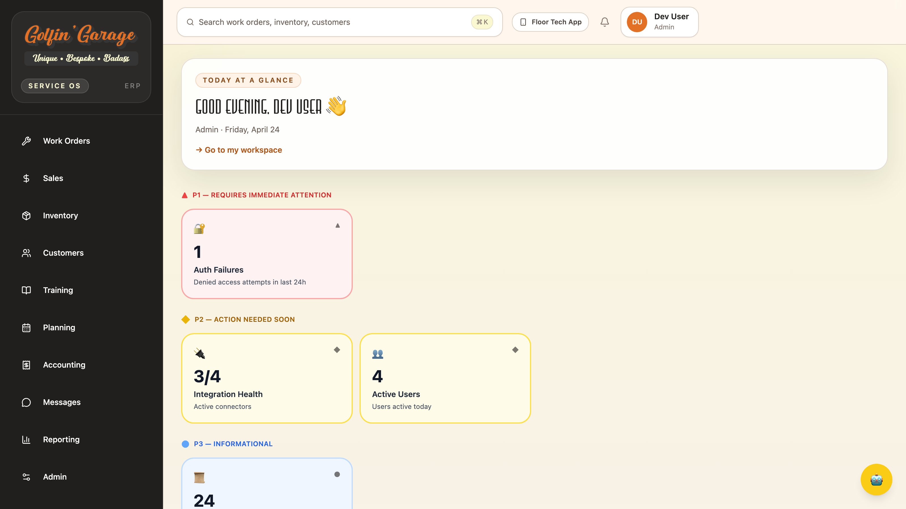

For shop managers, sales, parts, accounting, admin, and trainers at Golfin Garage.
Live site: https://golfingarage.m4nos.com
Sign in with your @golfingarage.com Google account. The sidebar on the left groups everything by job function (Work Orders, Sales, Inventory, Customers, Training, Planning, Accounting, Messages, Reporting, Admin). Click the Copilot 🤖 in the bottom-right corner whenever you want a shortcut — it can find customers, look up inventory, pull work orders, and summarize your day.
URL: https://golfingarage.m4nos.com — bookmark it.
Sign-in:
@golfingarage.com, you're redirected to Google. Sign in once and you're back in the ERP. No password to remember.krand40@gmail.com), you stay on the ERP and type your password.First-time users: you may be asked to set a new password. The requirements show live as you type (12+ characters, mix of upper/lower/number/special).
If Google rejects you with "This account can't be used to sign in", you're on a personal Gmail instead of your Workspace account — use the Google account picker to switch.

Sidebar (left): always-visible navigation. Click a section to expand it; sub-items show under the parent. Your current page is highlighted in orange.
Header (top):
↑ N pending appears when a mutation (e.g. clicking "Retry sync") failed due to a network hiccup and is being retried. Click Replay to force it.Main area: the page you navigated to.
Copilot 🤖 (bottom-right): press anywhere to ask questions about your data. It can answer things like "show me all open work orders for Pier Motorsports" or "which parts are below reorder point?"
Session timeout: you're auto-refreshed every 5 minutes. If your session actually expires, you're bounced back to the sign-in page — nothing is lost, just sign in again.
The ERP has 8 roles (Cognito groups). Everyone sees every sidebar section; each role has its own primary pages that do their job.
| Role | Primary pages |
|---|---|
admin |
Everything. In particular: Admin → User Access, Audit Trail, Integrations. |
shop_manager |
Work Orders → Dispatch Board, Open / Blocked, Planning → Build Slots, Reporting. |
technician |
Work Orders → My Queue, Training → My OJT. (Most technicians live in the Floor Tech app, not here.) |
parts_manager |
Inventory → Part Lookup, Reservations, Receiving, Manufacturers. |
sales |
Sales → Pipeline, Quotes, Forecast. Customers. |
accounting |
Accounting → Sync Monitor, Reconciliation. Admin → Audit Trail. |
trainer_ojt_lead |
Training → SOP Library, Assignments, Admin. |
read_only_executive |
Reporting, and read-only views of everything else. |
Roles are assigned by an admin under Admin → User Access. A user can hold multiple roles.
The heart of the shop. A Work Order (WO) is one golf-cart build or service job. Each WO has a vehicle, a customer, a status, and a list of technician tasks — the actual work to be done.
/work-orders/new
Fill in: customer, vehicle (new or existing), build configuration (which BOM), priority, notes. Save creates the WO in PLANNED status with tasks generated from the build config.
/work-orders/dispatch — [shop_manager]
The kanban-style board for assigning tasks to technicians. Columns are people. Unassigned tasks appear at the top. Drag a task card onto a technician's column to assign; drop it back in "Unassigned" to unassign.
Use this every morning to lay out the day's work.
/work-orders/open — [shop_manager]
All WOs that aren't COMPLETED or CANCELLED. Use the status filter to zoom in on BLOCKED — those are waiting on parts, approvals, or a second opinion. Each row shows:
/work-orders/my-queue — [technician] (mostly used from the Floor Tech App)
Your assigned tasks, newest first. Tap Start to transition READY → IN_PROGRESS; when done, tap Complete. If something stops you, tap Block, pick a reason code, and add detail.
/work-orders/sop-runner, /work-orders/time-logging, /work-orders/qc-checklists
Specialized screens used during task execution — step-by-step work instructions, clock-in/clock-out, and final-quality gates. Most of this is done from the Floor Tech App in practice; see floor-tech-manual.md.
/sales — [sales]
Dashboard lands on KPIs: total opportunities, weighted forecast, win rate, average deal size.
/sales/pipeline — kanban of deals by stage (PROSPECTING, PROPOSAL, NEGOTIATION, CLOSED_WON, CLOSED_LOST). Drag a deal across stages. Click a card for full detail + activity log.
/sales/opportunities — list view of every deal. Filter by stage, owner, close date.
/sales/quotes — all quotes across customers. Status: DRAFT, SENT, ACCEPTED, REJECTED. Creating a new quote: New Quote button → pick customer, line items, valid-through date, send.
/sales/forecast — weighted and best-case revenue projections for the current and next quarter.
Under Sales → Activity. Every call, email, meeting, or note logged against an opportunity. Use this to keep a customer's history complete.
/inventory — [parts_manager]
Golfin Garage uses a three-tier part lifecycle:
Each tier is a separate Part row, linked through a producedFromPartId chain. A single "4-Link Suspension Bent" rolls up as three Parts: Raw → Prepared → Assembled.
/inventory/parts — 267 parts after initial seed. Search by name, SKU, or variant. Filter by manufacturer, vendor, lifecycle level, install stage, part state (ACTIVE / DISCONTINUED). Each row shows on-hand quantity, reorder point, and last updated.
Click into a part to see its full record: manufacturer, default vendor, unit of measure, lifecycle level, install stage, transformation chain.
/inventory/reservations — parts held for specific work orders. Reservations reduce available stock without committing until the WO pulls them. Clear stale reservations here.
/inventory/receiving — log incoming POs. Scan or type the PO number, verify line items, click Receive. This increments on-hand and clears expected-arrival flags.
/inventory/planning — the shortage report. Groups parts by installStage (FABRICATION, FRAME, ELECTRICAL, DRIVETRAIN, STEERING_SUSPENSION, BODY, FINISH). Any row with shortfall > 0 is a part you need to order before the next build slot.
/inventory/manufacturers — the 12 seeded manufacturers (Golfin Garage in-house plus external suppliers). Click to see all parts from one manufacturer; useful when calling a vendor about a batch of backorders.
/customer-dealers
Two tables: Customers (443 rows after prior data import) and Dealers. Dealers are a special class of customer with ongoing service relationships.
/customer-dealers/customers — list view. Search by name or email. Filter by status (Active / Inactive). + New Customer creates a new record; fields are name, email, phone, address.
Click a row to see the customer profile: every work order, quote, invoice, and message thread tied to them. Deactivate hides them from default lists (they're never actually deleted).
/customer-dealers/dealers — list view. Dealers have extra fields: territory, service relationship status, contact email.
/customer-dealers/relationships — who's a dealer for which customer / which customer is serviced by which dealer. Edit links here.
/training — [trainer_ojt_lead], [admin]
This is the trainer authoring surface. Full detail — including the technician experience — is in training-manual.md. Quick summary of what lives here:
/training/my-ojt) — your own assigned modules if you're a trainer who's also a tech./training/assignments) — every assignment across the team, overdue alerts, assign-module button./training/sop) — create / publish / retire SOPs. Separate Inspection Templates tab for read-only ShopMonkey imports./training/admin) — every module regardless of status, step and quiz counts, preview./planning — [shop_manager]
/planning/slots — the weekly build-slot grid. Mon–Fri, each day has a capacity (default 8h). Unassigned work orders queue at the top; drag onto a day to schedule.
Each cell shows: order count, committed hours vs capacity. When you're happy with the week, click Publish Plan — this snapshots the plan and notifies the floor.
Use Monday morning to lay out the week. Re-publish as reality shifts.
/accounting — [accounting]
Go to Sync Monitor (/accounting/sync). If not yet connected, a yellow Connect QuickBooks button appears at the top. Click it → you're redirected to Intuit → sign into the company's QuickBooks account and authorize. You'll land back on Sync Monitor with a green "Connected" pill.
This OAuth token is good for 6+ months. If it lapses, you'll see the Connect button again — just click it.
/accounting/sync — a row per synced record (invoice, payment, customer). Status filters: ALL, FAILED, PENDING, SYNCED. For any failed row, click Retry — the sync Lambda re-runs immediately. If it fails again, click into the row to see the QB error message (usually a customer-name or item-name mismatch).
/accounting/reconciliation — history of reconciliation runs comparing ERP invoices against QuickBooks. Each run has a status (RUNNING, COMPLETED, FAILED, CANCELLED) and a mismatch count. Click a run for per-record detail on what differed.
Reconciliation is triggered nightly; this page is mostly for the accountant reviewing results.
/messages
Internal chat with four channel types:
#general, #parts, #shop-floor, #front-office. Everyone can post.Each channel supports messages, threaded replies, emoji reactions, and todos — checklist items with an assignee and due date, tracked inside the channel.
New Channel (top-right): name, type, members. Team channels are public by default; toggle private to restrict.
Unread counts appear in the sidebar and on the Notifications bell.
/reporting
Cross-domain KPIs on one screen:
Drill-down links on each tile.
/admin — [admin only]
/admin/access — invite, edit, deactivate users.
Invite User: click the button, type email and pick role(s). The user receives a temp password by email; on first sign-in they're forced to set a new one.
Edit: change roles, disable, re-enable.
Status: Active, Disabled, or Pending (invited but hasn't signed in yet).
Roles map 1:1 to Cognito groups. Changing a role takes effect on the user's next token refresh (≤ 5 min).
/admin/audit — every privileged action with timestamp, actor, action code, resource, and outcome (SUCCESS / FAILURE / DENIED). Examples:
USER_INVITEDROLE_CHANGEDWORK_ORDER_REASSIGNINVOICE_SYNCADMIN_ACCESS_ATTEMPTSearch by any of the columns. Rows are immutable — this is the compliance log.
/admin/integrations — cards for QuickBooks, AWS EventBridge, AWS Cognito, and ShopMonkey (the one-time migration). Each shows status (SYNCED / PENDING / ERROR) and last successful sync. QB card has the Connect button for OAuth reconnect if the token lapsed.
The floating robot button, always in the bottom-right. Ask it anything about your data. Examples that work today:
It's session-based — your conversation persists while you're on the site. It sees what page you're on and uses that as context.
Top header, the big search box. Press ⌘K (Mac) or Ctrl+K (Windows) from anywhere. Searches work orders, inventory parts, and customers. Press enter to jump to the top result, or arrow-through the list.
Use Copilot for anything more nuanced than a name/SKU lookup.
Top-right bell. Unread count badge. Triggers:
Click a notification to jump to the source. Mark all read in the dropdown header.
↑ N pending)Every write action (create, update, retry) tags the request with an idempotency key. If the network drops mid-request, the app retries in the background and shows ↑ N pending in the header. Click Replay to force an immediate retry. Nothing is lost — you just see the confirmation once the network comes back.
| Symptom | What to check |
|---|---|
| Sign-in loops after Google consent | Clear cookies for golfingarage.m4nos.com; try again. If it persists, your role may have been revoked — ping admin. |
| "Checking authentication…" spins forever | Hard-refresh the tab (⌘⇧R on Mac). Then check /admin/access — is your account Active? |
| Connect QuickBooks fails with a callback error | The QB OAuth redirect URL in Intuit's developer portal must match ours exactly. This is an admin task; ping admin. |
| "Session expired" every few minutes | Your token refresh is failing. Sign out, clear cookies, sign in fresh. If it persists, admin needs to reset the app client. |
Inventory dashboard shows 0 total |
The inventory seed hasn't run against prod. Admin task — 267 parts should appear after seed:inventory. |
| A WO that was yours disappeared from My Queue | Check /work-orders/open; it may have been reassigned or blocked by someone else. Audit Trail shows who. |
| Dispatch Board won't let you drag | You're likely viewing as a non-manager role. Only shop_manager and admin can reassign. |
Sync Monitor shows every row FAILED at the same time |
QB token lapsed. Admin reconnects. |
Anything not covered here: start in Admin → Audit Trail and search for the timestamp of the problem. 9 times out of 10 the error message is right there.